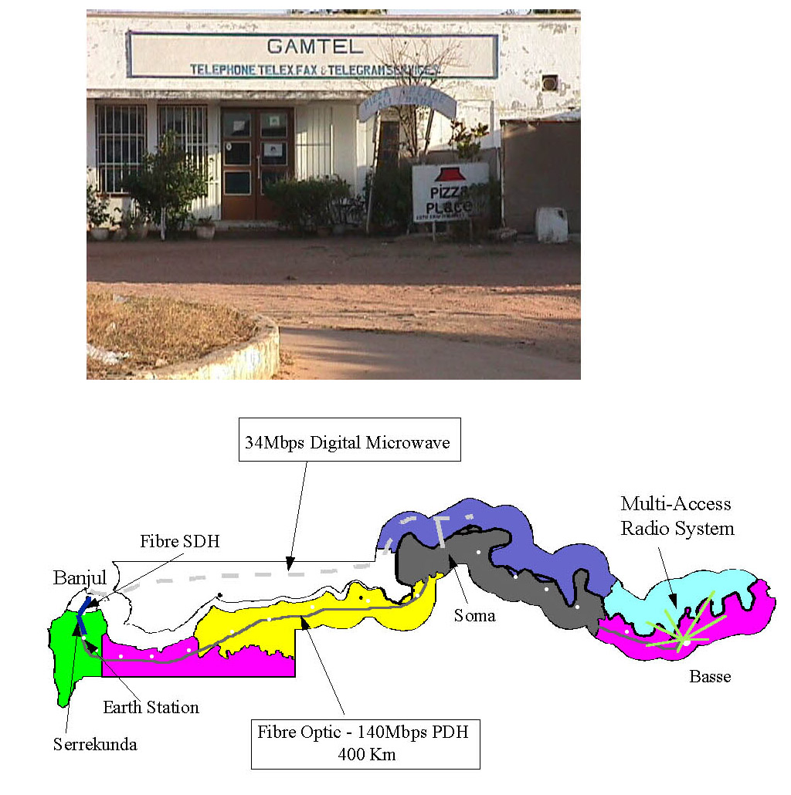
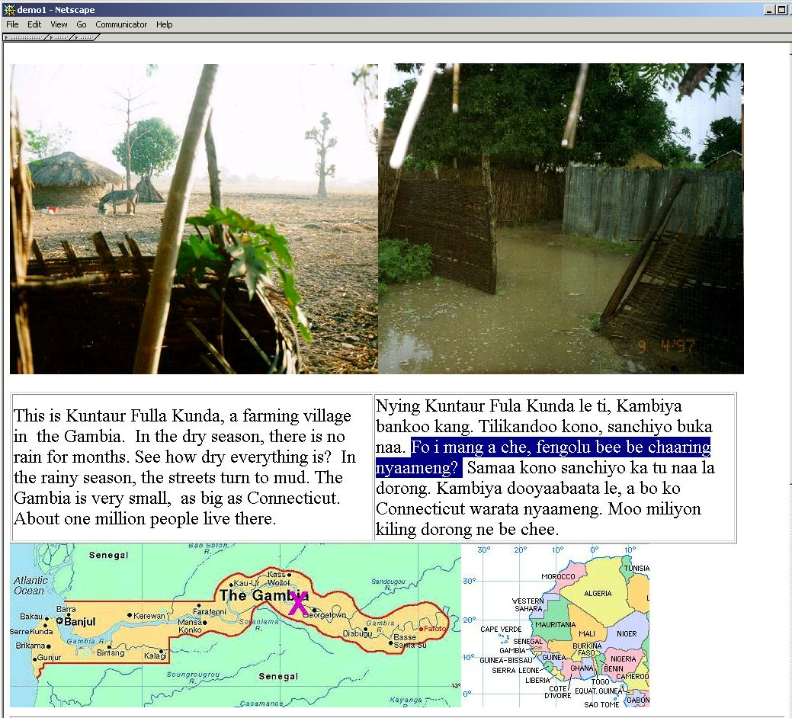
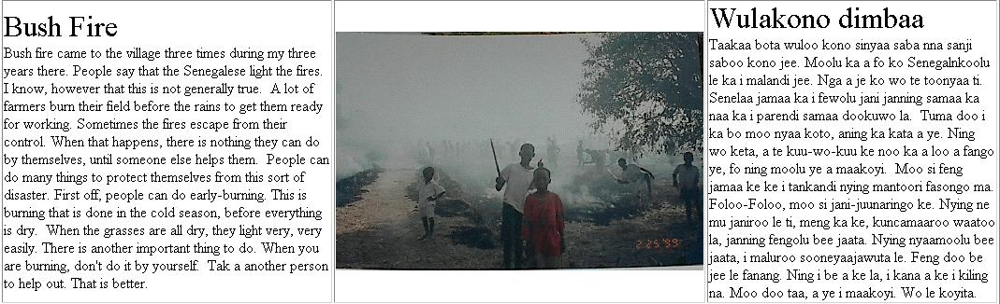
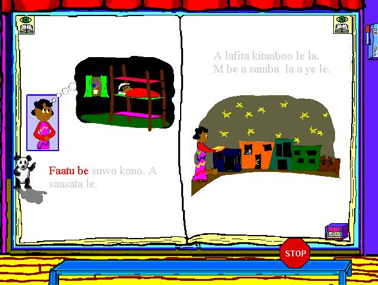

Information Access, Literacy and Development
Presentation at Digital Divide conference, Toronto, Nov 2001, on
work of J. Dyer (returned Peace Corps
volunteer) with M. Baldeh (Gambia), P. Fairweather (Yorktown), D. Nix
(IBM Foundation), and myself.
-
Are computer skills self-teaching? (Sugata Mitra's experiments
with hole-in-the-wall computer in New Delhi slum, India see
http://www.niitholeinthewall.com/
and http://www.doorsofperception.com/doors/doors6/speakerbio/mitra.html
)
-
In many places, language & cultural problems exceed infrastructure
problems, e.g. West Africa.
-
The Gambia: most people illiterate; fluent in local languages
(Mandinka, Wolof, Pulaar...) but not English or French
-
Local language and bilingual websites with Text-to-Speech
(TTS) for users who can point and click but not read.
-
TTS engines not hard to customize to multiple local languages.
-
Use Machine Translation (MT) for specialized content such
as weather, bus routes, crop prices.
-
Most content should be human-generated and/or translated
-
Expatriates are eager to help translate and develop content
and tune local language TTS engines
The Gambia: poor, peaceful; problems with deforestation
and drought.
Population. 1.4M, 75% in subsistence agriculture (rice
& peanuts)
Pretty Good information infrastructure

screen shots of bilingual websites with English/Mandinka TTS


IBM's Watch Me Read uses speech recognition to
help children learn to read aloud. A friendly animated panda acts
as tutor, and may speak the same or different language from the text.
The child's voice is recorded and played back when he/she has satisfactorily
read the book. Screen shots of a unilingual Mandinka WMR book.
